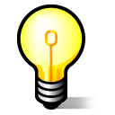

User Tools
- Logged in as: Will Pimblett (will)
- Admin
- Update Profile
- Logout
Sidebar
tech:lx:start
Table of Contents
This set of pages contains useful resources for lighting designers, sound designers and techies, and has a wealth of information about the kit we use for you to familarise yourself with.
Resources
Blank rig plans avalaible on the theatre page.
Example Lighting Designs
Lanterns
 Lights, fixtures, luminaires or lanterns. All the same word for the things that that make it bright onstage. Various types exist to do different jobs, read on to find out more…
Lights, fixtures, luminaires or lanterns. All the same word for the things that that make it bright onstage. Various types exist to do different jobs, read on to find out more…
- Key Points about types of fixtures
- Videos for learning about types of lights.
- The list of lanterns we hold can be found on Our Website
- What lamps go in what light
Colour
 A colour filter or a gel is a transparent colored material placed in the path of a light beam to colour the light or for colour correction. Modern gels are thin sheets of polycarbonate or polyester.
A colour filter or a gel is a transparent colored material placed in the path of a light beam to colour the light or for colour correction. Modern gels are thin sheets of polycarbonate or polyester.
Gels have a limited life, especially in saturated colors. The color will fade or even melt, depending upon the energy absorption of the color, and the sheet will have to be replaced.
Our gel catalogue is available to view online, it works well on a smartphone too when you're running around the theatre.
Power
 The theatre uses 8 Zero88 Betapack dimmers giving us 48 channels, there are a total of 72 circuits on stage which are hard patched to the dimmers in the workshop. Hard power is available in the patch bay next to the dimmers.
The theatre uses 8 Zero88 Betapack dimmers giving us 48 channels, there are a total of 72 circuits on stage which are hard patched to the dimmers in the workshop. Hard power is available in the patch bay next to the dimmers.
How dimmed power in the main space works.
Portable Dimmer

We have an ETC Smartpack for use mainly with Fringe shows but may be used in the main space to expand the number of channels avaliable.
The Smartpack provides 12 channels of dimming out of two socapex output (six per output). It can operate from a DMX input or via programmed presets, this is useful if you want a constant lighting state.
Power input is via a 63A three phase connector, an adaptor to 32A is used for use in the studios.
Control
 As of September 2013 the theatre uses an ETC ION for the main space, a easy to use but powerful lighting desk.
As of September 2013 the theatre uses an ETC ION for the main space, a easy to use but powerful lighting desk.
For our Finge shows the theatre has invested in an ETC Nomad solution. This is a Copy of the same software used on the Ion but with only one output. Attatched to a touch screen this solution is ideal for our Fringe Shows. Refer to the Fringe Handbook for further details.
We hold a Strand 300 as a backup desk. In the past, we used a Zero88 Sirius 48.
DMX
There are hardwired DMX lines between the dimmers, tech box & seating block in the main space. The details of this can be found in this document: nnt_dmx.pdf
LED Tape
LED tape is a thing that we can use in shows, using LED Tape DMX controllers. We own 3 controllers and Lakeside Arts Centre own more that we have borrowed in the past.
RGB 5050 tape is the most useful we have found so far: https://www.amazon.co.uk/gp/product/B01N2TSGU6/
The method of securing this tape to surfaces means that it can be applied to a surface 4-5 times before needing replacing (i.e., 4-5 shows) if removed in a careful fashion.
Fairy Lights
Many shows want to use fairy lights. We have several 5m long sets of fairy lights that can be used. These cannot be used with the installed dimmers in either space, and must be used with the Smartpack.
The Smartpack settings to ensure that the fairylights can turn fully off and retain their settings are: Preheat @ 1%. You also need to use a load lamp (Grelco and something Acclaim sized).
tech/lx/start.txt · Last modified: 2019/05/22 01:02 by Sam Osborne